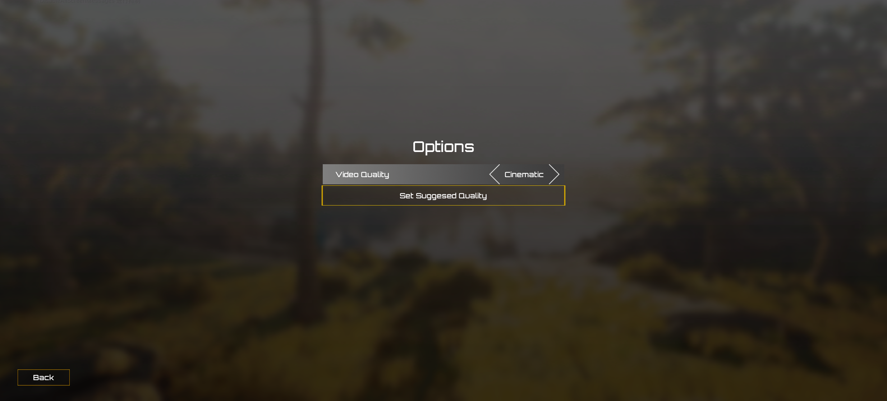
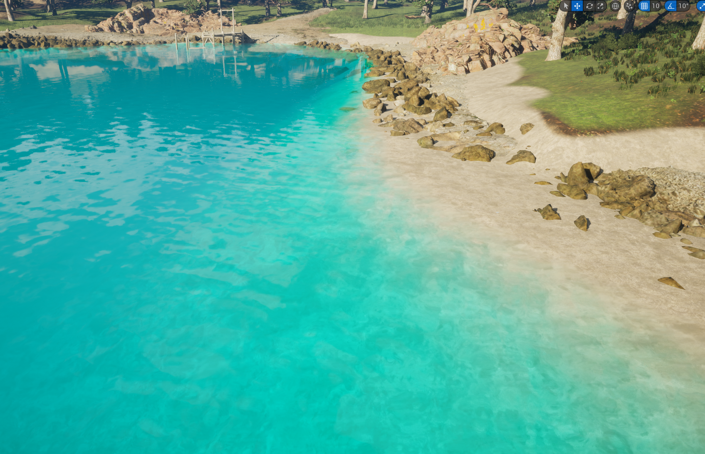
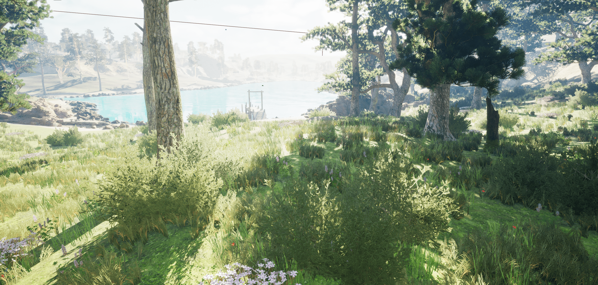
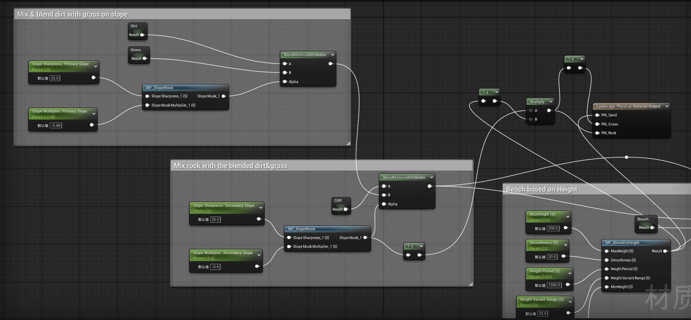
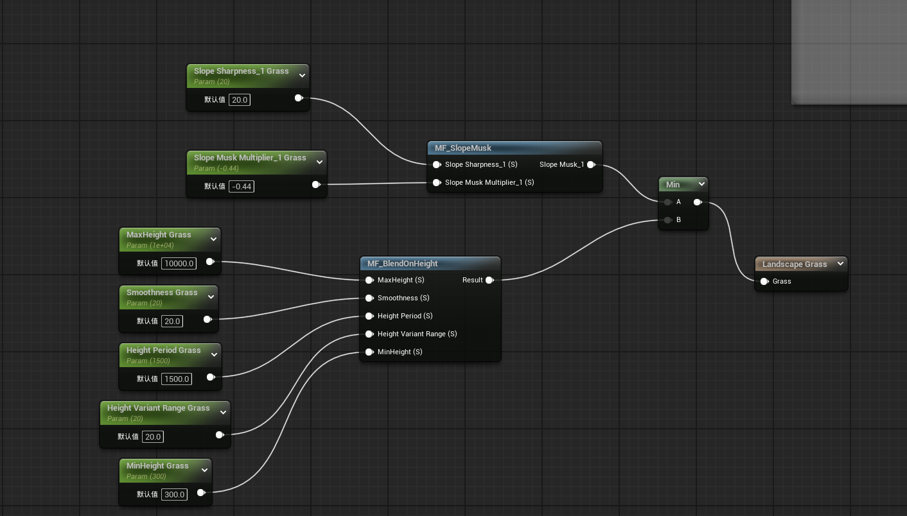
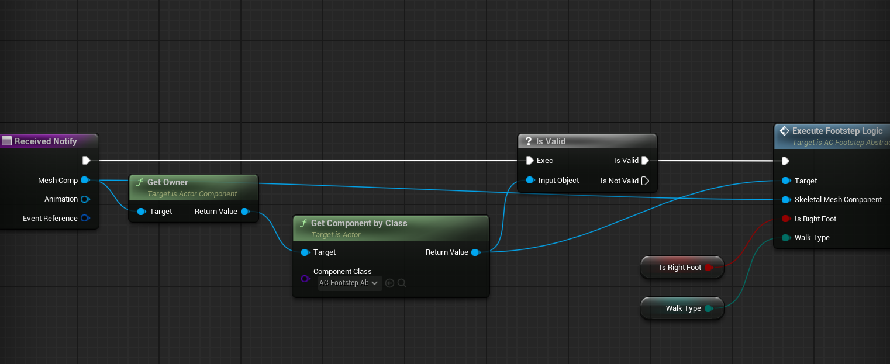
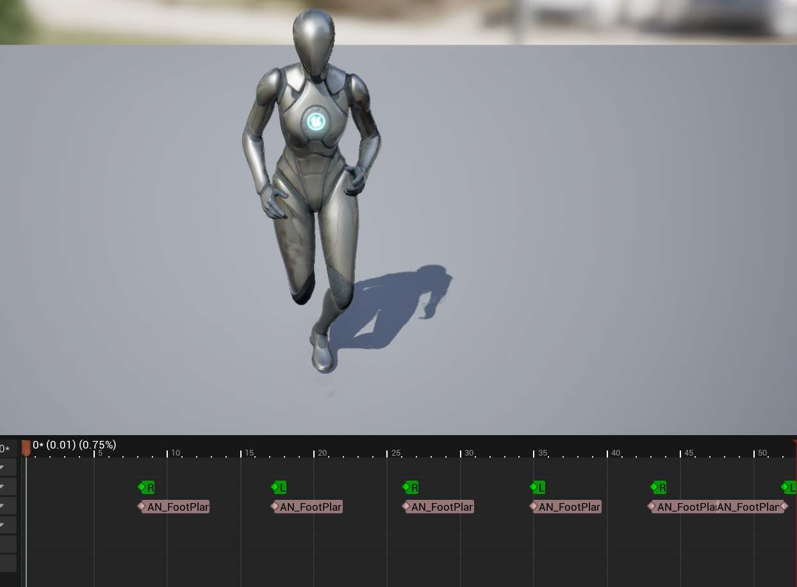

Survival Spring - A Survival Game Template on Unreal 5
A survival game template which provides the structure of an ARK: Survival Evolved like game.
This is a Learning project. During development, I learned Unreal 5 Engine.
Key Features
Game UI
Developed Main Menu and InGame UI with basic functionalities.
MainMenu

InGameUI
Landscape System
Auto generate landscape on a given mesh, determine the materials.
Based on Slope Function, determine the Cliff environment, and blend grass with cliff using dirt

Based on Slope and Height function, determine the sand beach, and blend with grass
Implements grass, flower and the foliage using Unreal GrassType.
Using plugins and landscape layers to realize trees and water.
Auto selecting physical materials for landscape type based on the algorithm.
 Pawn
Bind the chosen mesh with the Unreal Quinn character for the animation component.
Environment Interaction - Footstep System
Detecting footstep with Anim Notify.
In Notify, executes logic and functions.
 Realizing footstep sounds and footstep area detections using Unreal physical material.